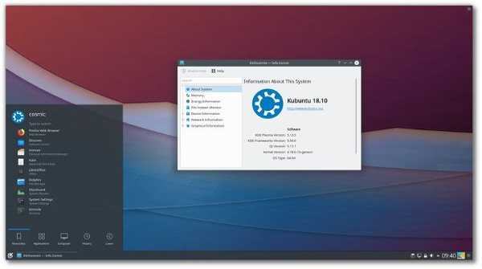

Ubuntu Server
Ubuntu Server apporte une évolutivité économique et technique à votre centre de données, public ou privé. Que vous souhaitiez déployer un cloud OpenStack, un cluster Hadoop ou une ferme de rendu de 50 000 nœuds, Ubuntu Server fournit les meilleures performances d'évolutivité disponible.
Ubuntu MATE
Ubuntu MATE est un système d'exploitation stable et facile à utiliser avec un environnement de bureau configurable, il convient aux stations de travail modernes, aux ordinateurs à carte unique et aux matériels plus anciens. Il est idéal pour ceux qui veulent en tirer le meilleur parti et préfèrent une métaphore de bureau traditionnelle.
Xubuntu
Xubuntu est un système d'exploitation performant, élégant, intuitif et gratuit. Doté de toutes les applications nécessaires, il est prêt à l'emploi. Système gratuit sous licence libre basé sur Linux, Xubuntu est une variante d'Ubuntu, parfaitement adapté aux ordinateurs portables, de bureau et aux serveurs. Xubuntu remplace avantageusement votre ancien système sur tous types de machines.
Lubuntu
Lubuntu est un système d'exploitation rapide et léger, doté d'une interface utilisateur propre et facile à utiliser. Il s’agit d’un système Linux utilisant le bureau minimal LXDE / LXQT et une sélection d’applications légères . Pour cette raison, Lubuntu a des exigences matérielles très faibles. L'installation ne nécessite que 384 Mo de mémoire vive, il est cependant recommandé de disposer entre 384 et 800mo ainsi que de 4,3 Go d'espace disque.

Kubuntu
Kubuntu est un système d'exploitation construit par une communauté mondiale de développeurs, testeurs, supporteurs et traducteurs. C'est une alternative gratuite, complète et ouverte qui contient tout ce dont vous avez besoin pour travailler, jouer ou partager. Kubuntu associe Ubuntu à KDE et au fabuleux bureau Plasma pour vous offrir un ensemble complet d’applications disponibles en un seul clic depuis le centre logiciel Discover. Construit à l'aide de la boîte à outils Qt, Kubuntu est rapide, élégant et compatible avec les appareils mobiles permettant une intégration facile entre le bureau de votre PC, votre téléphone ou votre tablette. Il vous suffit d’utiliser le magasin Google Play pour installer KDE Connect sur votre appareil Android et d’intégrer votre appareil à votre bureau.
Budgie
Ubuntu Budgie est un fier membre officiel de la famille Ubuntu, combinant simplicité et élégance de l’interface Budgie pour produire une distribution traditionnelle orientée bureau avec un paradigme moderne. Budgie est un environnement de bureau axé sur la nécessité d’avoir un bureau propre et puissant, sans fioritures inutiles. Entièrement fonctionnel, incluant les meilleures applications Linux disponibles qui vous rendent (votre communauté) productif immédiatement. Soutenue par les puissants référentiels Ubuntu dérivés de Debian, la personnalisation n’est qu’un simple clic pour vous permettre d’adapter le bureau à votre façon de travailler. Ubuntu Budgie est livré avec une collection d'applications qui vous permet de travailler sur des tâches quotidiennes et d'être productif.
Ubuntu Studio
Ubuntu Studio est un système d'exploitation gratuit et ouvert pour les créatifs. Cest la distribution GNU / Linux orientée multimédia la plus utilisée dans le monde. Livré préinstallé avec une sélection des applications multimédias gratuites les plus courantes et configuré pour optimiser les performances des flux de travail définis par Ubuntu Studio : Audio, Graphiques, Vidéo, Photographie et Publication .
UbuntuKylin
UbuntuKylin est une variante d'Ubuntu adaptée aux utilisateurs chinois. Cette variante comprend entre autres une traduction chinoise complète, un calendrier lunaire chinois, un widget météo couvrant tout le territoire de la Chine, un moteur de recherche personnalisé pour la musique du pays, les logiciels les plus utilisés par les chinois, et les façons d'écrire adaptées à la langue chinoise.